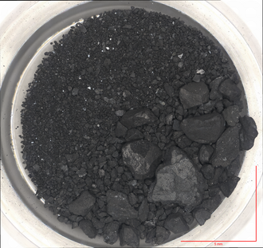

101955 Bennu is a potentially hazardous near-Earth asteroid, part of the Apollo group.
It was discovered in 1999 and measures around half a kilometer in diameter.
Bennu has a relatively high risk of impacting Earth in the future - there is a cumulative 1 in 1,750 chance of impacting somewhere between 2178 and 2290.
The composition is carbon-rich, mostly in the form of graphite, primordial carbides, and organic compounds, but it is also rich in hydrated phylosilicates, as well as some water.
Bennu was the target of the OSIRIS-REx mission; it is the third asteroid from which samples have been collected and brought to Earth for analysis.
Sample analysis has shown that Bennu contains important compounds that have lead to the creation of life, including amino acids, nucleobases, and phosphates.
Bennu was discovered on 11 September 1999 by the LINEAR survey at the Lincoln Laboratory Experimental Test Site near Socorro, New Mexico.
Bennu is named after the ancient Egyptian deity of the same name, depicted as a heron, associated with the Sun, creation, and rebirth.
The name was chosen as a part of the "Name that Asteroid!" contest run by the University of Arizona, The Planetary Society, and the LINEAR Project in 2012.
Orbit and rotation
Bennu is a near-Earth asteroid, part of the Apollo group.
The semi-major axis is 1.126 AU, the perihelion is 0.897 AU, and the aphelion is 1.356 AU.
Bennu completes one orbit every 437 days, or approximately 1.20 years.
While it is not in a 5:6 resonance with Earth, the cycle of close approaches repeats every 6 years with slight deviations, until a significantly close approach would perturb its orbit.
Bennu's orbital eccentricity is 0.204 and the inclination is 6.035°.
The rotational period is around 4.30 hours.
Due to the YORP effect, solar radiation affects the rotational period.
In the case of Bennu, it decreases by about one second every 100 years.
Bennu is classified as a potentially hazardous asteroid.
The Earth minimum orbital intersection distance (MOID) is 0.003 AU, or 1.25 lunar distances.
In 2060, Bennu will make a close approach 0.005 AU from Earth, which will perturb its orbit, and then in 2135, when that distance will be only 0.0014 AU.
Its orbit will become more chaotic and many more close approaches are expected.
Between 2178 and 2290, its cumulative impact risk is 1 in 1,750, with the most threatening virtual impactor in 2182.
For that reason, Bennu is is listed on the Sentry Risk Table, an automated impact prediction system.
Shape and size
Bennu has dimensions of 565 × 535 × 508 m and a mean 490 m diameter.
Bennu has a shape reminiscent of a spinning top, similar to the previously explored asteroid Ryugu.
It has a very prominent equatorial ridge caused by material accumulating there from the fast rotation of Bennu.

Sample of Bennnu allocated to JAXA. The material found appears dark. Source
Bennu is a B-type asteroid, consisting of carbon-rich material.
Usually that carbon is in the form of graphite and organic material, including some complex molecules.
Spectroscopic analysis has shown the presence of hydrated silicates.
It's composition corresponds to CI and CM chondrites found on Earth.
Bennu is a rubble pile, similar to other small asteroids.
It was most likely broken off from a larger carbon-rich asteroid about 700 million to 2 billion years ago.
Activity similar to comets, in which plumes of rock fragments are emited, has also been detected, making Bennu an active asteroid.
The samples collected during the OSIRIS-REX mission include the typical hydrated silicates, particularly Mg-rich phyllosilicates, also known as clay minerals.
Other major components include magnetite, sulfides, carbonates, organic compounds, as well as Mg and Na-rich phosphate minerals.
Bennu also contains the original ingredients that formed the Solar System, making it a "time capsule".
They were present in the form of carbides and graphite.
The most important findings are those of carbon- and nitrogen-rich organic compounds.
These include 14 of the 20 amino acids that make up proteins in terrestrial organisms, as well as all five nucleobases that make up DNA and RNA molecules - adenine, thymine, cytosine, guanine, and uracil.
Water, clay minerals, phosphates, amino acids and nucleobases were all essential building blocks for the birth of life on Earth.
The surface of Bennu consists of many boulders, as well as several craters.
Many large ones are concentrated along the equatorial ridge - Minokawa, Huhuk, Alicanto, and Ohnivak.
There is also Tlanuwa Regio, where many large boulders appear.

OSIRIS-Rex collecting samples from the "Nightingale" landing site, after which it bounces off to avoid getting caught in the loose regolith
Bennu was visited by the OSIRIS-REx mission by NASA.
Launched in 20186 it reached Bennu on 3 December 2018.
The probe mapped the surface of the asteroid for 2 years, after which four landing sites have been chosen.
In the end, the "Nightingale" landing site has been selected for the sample.
The probe impacted the surface and bounced off, so as to not get stuck in the loose surface.
The 120 gram sample was then returned to Earth in 2023, landing in Utah.
Several teams have analyzed the samples since then and have revealed that asteroids like Bennu have all the important ingredients for the creation of life.
OSIRIS-REx's mission has been extended.
Now under a new name, OSIRIS-APEX, the probe is on its way to another potentially hazardous asteroid - Apophis.
External links
{kind=link}